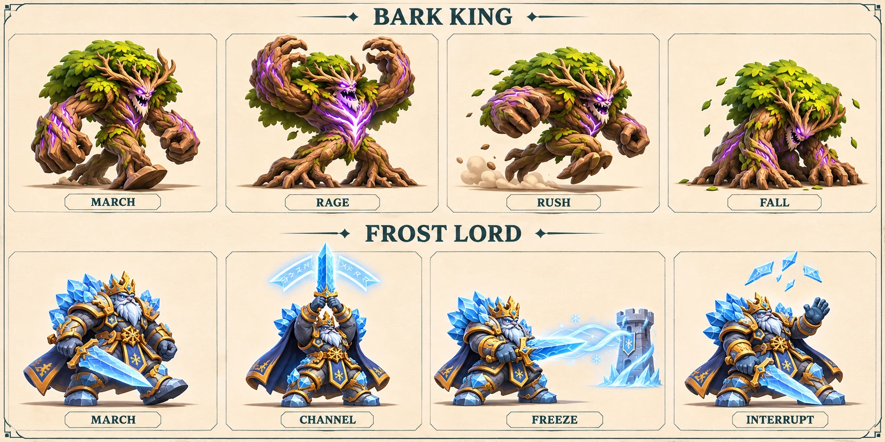
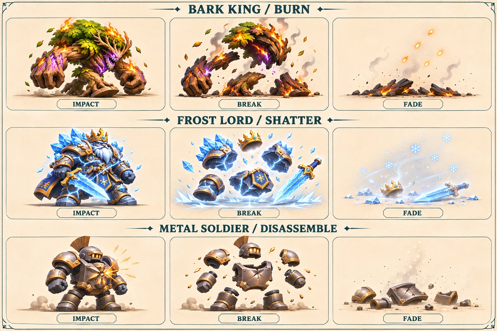

고목왕의 가속, 서리군주의 충전과 차단.기존 2D 포즈로 동작 의도와 시간을 검토하는 시안입니다. 게임 미연동 · 새 3D 애니메이션 아님
낮아진 상체는 가속, 위로 든 검은 충전. 색 없이도 다음 행동을 읽을 수 있게 합니다.
고목왕은 반피 미만에서 즉시 가속. 서리군주는 2.5초 충전 후 타워만 2초 동결합니다.
작은 파편과 국소 문양을 사용합니다. 경로·타이머·타워 상태가 장식보다 우선합니다.


제작 설계와 검증 기준 · 9종 모델링 인계 · 전투·이펙트 계약